禁止酒駕
酒後不開車 安全有保障
啤酒百科
精釀啤酒(Craft Beer)最早出現在1970年代，當時英美兩國不約而同出現了不少小型釀酒廠 (Microbrewery) 與家庭式釀酒廠(Homebrewing)，相較於產量多、規模大的大眾啤酒品牌，這些超級小廠 (有些規模甚至小到就藏在自家車庫) 會依照各自喜好，釀出味道、香氣與材料都別有風格的手工啤酒。
啤酒的種類啤酒可用發酵法粗分為「Ale」跟「Lager」兩種類型： 頂層發酵的統稱為「艾爾Ale」，發酵溫度為18-23°，發酵時間較短，可於兩到三天完成。艾爾啤酒的酵母在發酵時會產生豐富的酯質，使酒體帶有特殊的水果香氣，口感通常比拉格啤酒更加濃郁，為傳統釀造方法。 低層發酵的則稱為「拉格Lager」，源自於德語的Lagern（窖藏之意），又稱窖藏啤酒，是一種利用低溫熟成技術製作的啤酒，發酵溫度為9-12°，酵母會沈澱在桶底發酵，酒體清澈，顏色也多為淡色。優點為酒體穩定、不易變質，而商業啤酒多採用這種發酵方式釀造。
啤酒原料
精釀啤酒主原料僅4種，天然添加物呈現風味多樣化
麥芽
Malt
決定了酒的顏色、香味、酒體、口感、尾韻，徹底影響一瓶啤酒的樣貌。
啤酒花
Hop
提供苦味，增添香味，壓抑細菌來維持酵母活性。
酵母
Yeast
分為拉格酵母、愛爾酵母和野生酵母3大類，發酵溫度不同，所造成的風味各異
水
Water
水的硬度，即水中的礦物質含量會影響啤酒的口味、色澤
釀啤酒步驟
不管是釀製二十公升或兩千公升的啤酒，方法永遠只有一種。
1.麥芽
2.糊化
3.啤酒花
4.煮沸
5.冷卻
6.酵母
7.發酵
8.過濾
9.倒入
10.分裝
酒杯介紹
就像喝葡萄酒一樣，一種啤酒一種杯，選對杯子就能讓啤酒美味升級。

由Alber & Co的Hugo Pick所設計，杯形最大的特色在於環狀突出的設計方便手拿，防止滑落而摔出缺角，也可以讓杯子堆疊時更加穩固，杯子間也不會因此卡住，常用在飲用英式愛爾或社交型啤酒。

外型貌似一朵盛放的鬱金香，杯型收口的設計可以讓香味集中，中段收窄的部分可以保留香氣，並且幫助維持酒帽。外張的杯緣可以擴香並貼合嘴形，容易入口，適合香味複雜的愛爾或是比利時啤酒。

Chalice和Goblet都叫聖杯，高腳杯型的設計源自於基督宗教的儀式，Chalice比起Goblet杯壁較厚，重量較沉。聖杯的特色在於開口大、瓶身淺而底部寬，有助於酒體產生泡沫與減緩其消失的速度，適合泡沫細密的修道院啤酒。

這種杯型適合飲用香檳，瓶身集中收口的設計可以聚攏泡沫，集中啤酒的香氣，流線型的杯身設計給人優雅尊貴的感覺，呈現酒的顏色與氣泡，用於富有水果香氣的比利時啤酒。

Stange是德文棍棒的意思，直身的設計可減少酒體與外界接觸，讓容易揮發的芬芳物質保持在酒內，容量通常低於200ml，必須在泡沫消失前飲用完畢，常用於傳統的德式啤酒與科隆啤酒。

標準的德式啤酒杯，據稱是由Willy Steinmeier所設計，瓶身的上下差異不顯著，微微收口的設計有助於香氣集中，適用於德式愛爾或是拉格啤酒。
專為皮爾森設計的酒杯，上寬下窄的設計可以支撐酒帽，細長透明的瓶身可以呈顯色澤金黃的淺色拉格啤酒，欣賞酒泡上升的美感。杯腳的設計可用手指拿捏，避免手溫接觸到杯身，讓啤酒保持冰涼。
美式的雪克杯造型簡單，上寬下窄，大小適用於手搖調酒杯，所以較外型相似的圓錐品脫杯更為強壯，容量通常是473ml，適用於所有的啤酒類型，例如IPA、愛爾啤酒、拉格、司陶特等。